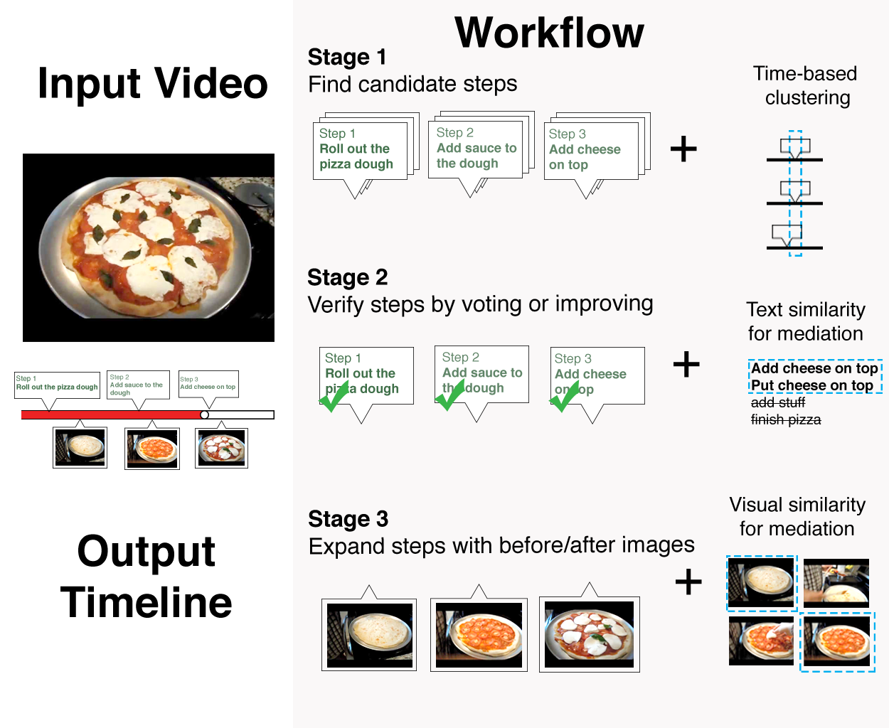
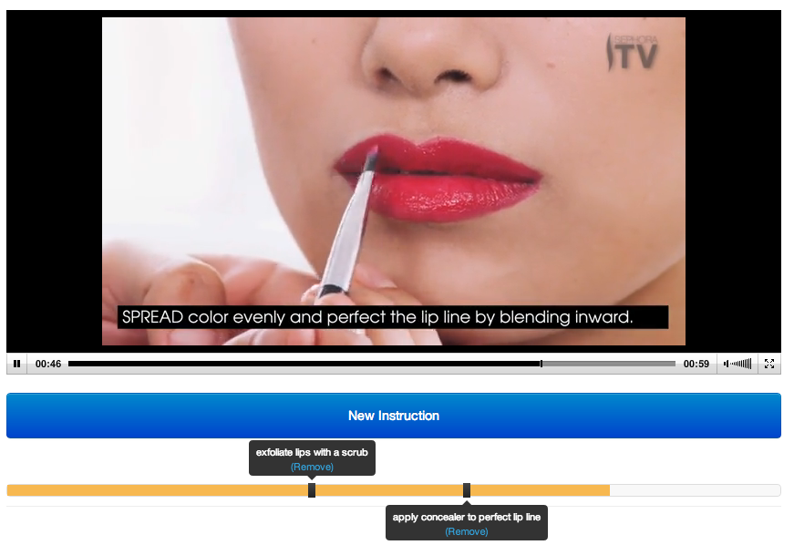
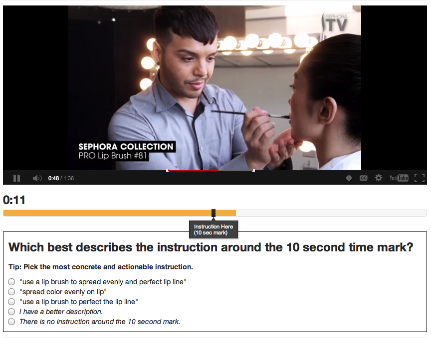
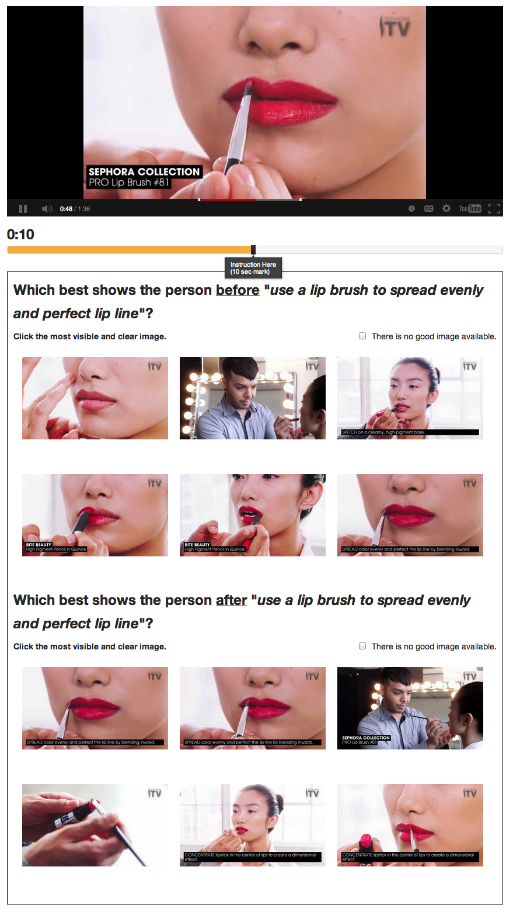

Crowdsourcing workflow
To add the needed step annotations to existing how-to videos at scale, we introduce a novel crowdsourcing workflow. It extracts step-by-step structure from an existing video, including step times, descriptions, and before and after images. We introduce the Find-Verify-Expand design pattern for temporal and visual annotation, which applies clustering, text processing, and visual analysis algorithms to merge crowd output. The workflow does not rely on domain-specific customization, works on top of existing videos, and recruits untrained crowd workers. We evaluated the workflow with Mechanical Turk, using 75 cooking, makeup, and Photoshop videos on YouTube. Results show that our workflow can extract steps with a quality comparable to that of trained annotators across all three domains with 77% precision and 81% recall.

Stage 1. Find candidate steps

Stage 2. Verify steps by voting or improving

Stage 3. Expand steps with before/after images
